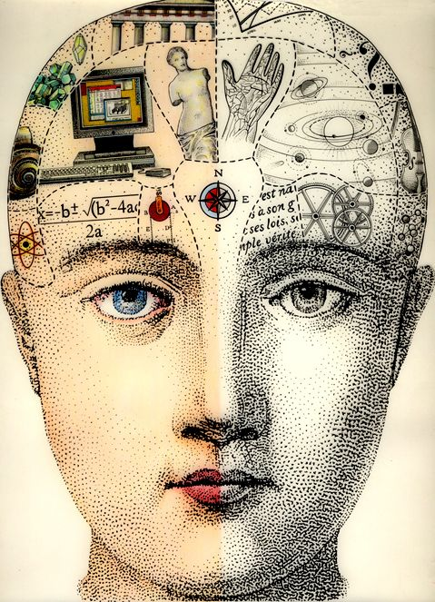

UX/UI & Product Thinking
- User-centered thinking
- Usability-focused layouts
- Visual hierarchy
- Responsive interface design
- Clear information structure
University of Toronto • Cognitive Science • Statistics & Mathematics
I design for people and build with code.
I’m building a portfolio at the intersection of UX/UI, web development, and problem-solving. I combine user empathy from real technical support experience with front-end and software skills.

About
I’m a University of Toronto student interested in technology roles where I can combine UX/UI thinking, clear communication, and coding skills.
My background combines technical curiosity, creativity, and user-facing experience. I enjoy building digital experiences that are both visually clear and practical to use.
Through study and projects, I’ve developed a foundation in web development and programming. Through real support work, I’ve learned how users think, where friction appears, and how important clear systems are.
Fast learner • Organized • Strong communicator • Detail-oriented
Photography • Video editing • Visual communication
English • Ukrainian • Russian (fluent), French (beginner)
UX/UI, frontend, software, and tech-focused internship opportunities
Skills
A mix of design thinking, front-end implementation, and technical problem-solving.
Projects
A selection of websites and projects that reflect both design choices and implementation skills.
Software Project • Team • Java
Team-built phishing detection application developed in Java. The project analyzes email content, supports email submission and review workflows, and includes dashboard/admin-oriented features. Highlighted strengths: software architecture, teamwork, and practical problem-solving.
UX/UI • Frontend • Real Use Case
Event website designed for a real user context with clear navigation, itinerary/venue/photo sections, and bilingual content support (English/Ukrainian). Focused on usability, readability, and mobile-friendly presentation.
Web Presentation • Storytelling • Frontend
A course presentation built as a website to communicate complex content in a more engaging and visual format. Demonstrates content structuring, visual storytelling, and web implementation for academic communication.
Creative Portfolio • Visual Design
Personal photography portfolio showcasing visual composition, aesthetic direction, and creative presentation. Included as a supporting project to demonstrate design sense and visual communication.